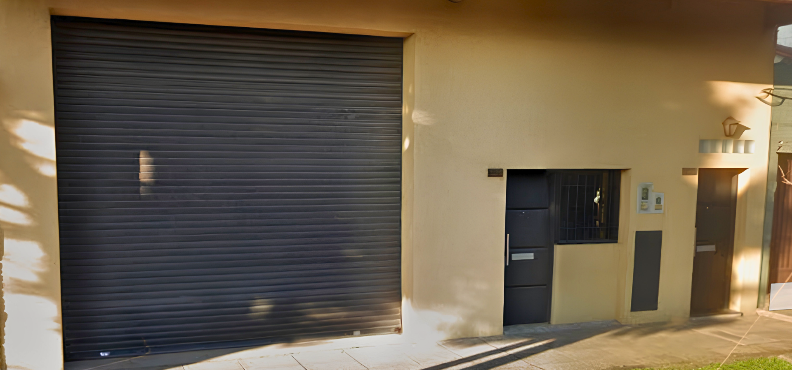

Calidad Garantizada
Trabajamos con marcas líderes y seleccionamos cada artículo asegurando materiales de primera línea como acero inoxidable y cerámica reforzada.

Distribuidora Ángel Bazar nació como un emprendimiento familiar con una misión clara: acercar los mejores artículos para el hogar, la cocina y la mesa, combinando durabilidad, diseño y precios accesibles.
Trabajamos con marcas líderes y seleccionamos cada artículo asegurando materiales de primera línea como acero inoxidable y cerámica reforzada.
Nos importa que encuentres exactamente lo que necesitás, brindándote asesoramiento en cada paso de tu compra.
Creemos que la cocina es el corazón del hogar y queremos que tengas las herramientas ideales para disfrutarla.